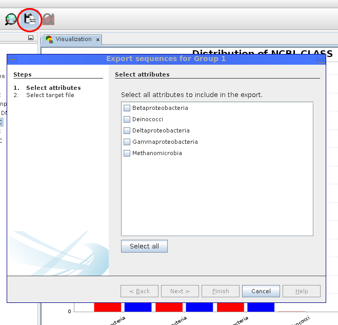

Next: Biodiversity indices Up: Visualization of results Previous: Visualization of results Contents
|

|
The sequence export wizard allows to export sequences conditionally based on analysis results. For each visualization group, it is possible to choose the attributes for which sequences should be obtained (2.28). Sequences are subsequently downloaded from the MGX server and saved in FASTA format files for each group.